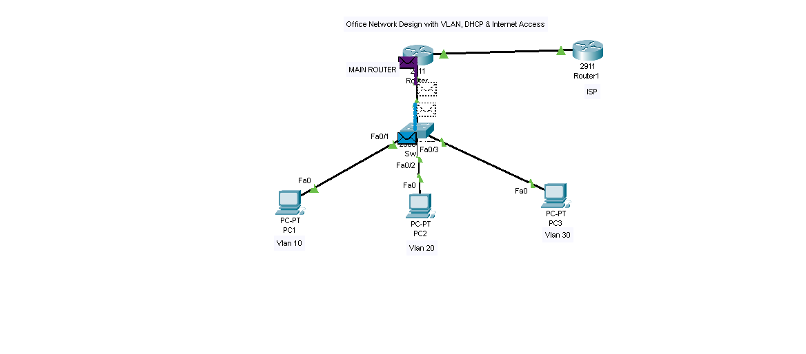
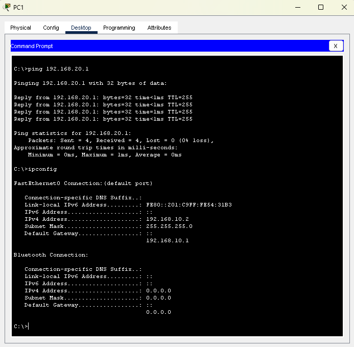

By Sabo Benson – Network Engineer
A growing office network required automatic IP assignment and internet access. Manual IP configuration was inefficient and error-prone, and there was no centralized system to manage connectivity across departments.
ISP Router → Main Router → Switch → Multiple PCs

| VLAN | Department | Network | Gateway |
|---|---|---|---|
| 10 | HR | 192.168.10.0/24 | 192.168.10.1 |
| 20 | IT | 192.168.20.0/24 | 192.168.20.1 |
| 30 | Finance | 192.168.30.0/24 | 192.168.30.1 |
| - | WAN | 200.0.0.0/24 | 200.0.0.1 |
! Inter-VLAN Routing interface g0/0.10 encapsulation dot1Q 10 ip address 192.168.10.1 255.255.255.0 interface g0/0.20 encapsulation dot1Q 20 ip address 192.168.20.1 255.255.255.0 interface g0/0.30 encapsulation dot1Q 30 ip address 192.168.30.1 255.255.255.0 ! WAN Interface interface g0/1 ip address 200.0.0.2 255.255.255.0 ! DHCP ip dhcp pool HR network 192.168.10.0 255.255.255.0 default-router 192.168.10.1 ip dhcp pool IT network 192.168.20.0 255.255.255.0 default-router 192.168.20.1 ip dhcp pool FINANCE network 192.168.30.0 255.255.255.0 default-router 192.168.30.1 ! NAT access-list 1 permit 192.168.0.0 0.0.255.255 ip nat inside source list 1 interface g0/1 overload
ping 192.168.20.2 ping 8.8.8.8

This type of network design is used in offices to improve scalability, reduce manual configuration, and enable secure communication between departments.
Email: sabobenson20@gmail.com
Phone: 0745866949